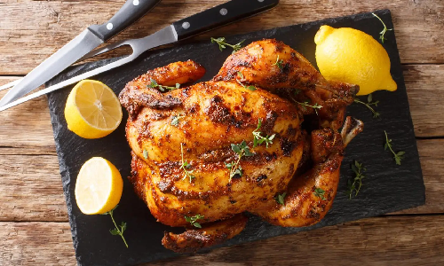

Pollo Horneado
Pollo jugoso con piel dorada y un toque ácido que equilibra muy bien las hierbas aromáticas.
Ingredientes
- 4 piezas de pollo (muslos o pechugas)
- 2 cucharadas de aceite de oliva
- 2 dientes de ajo picados
- 1 cucharadita de paprika
- 1 cucharada de orégano seco
- 1 limón
- Sal y pimienta al gusto
Preparación
- Preparar el pollo
- Lava y seca las piezas de pollo.
- Colócalas en un recipiente hondo.
- Marinar
- Mezcla aceite, ajo, paprika, orégano, jugo de limón, sal y pimienta.
- Impregna bien el pollo y deja reposar 5 min (opcional: 1 h en nevera).
- Hornear
- Precalienta el horno a 200 °C.
- Coloca el pollo en una bandeja y hornea 30–35 min, volteando a la mitad.
- Servir
- Deja reposar 3 min y sirve con ensalada, papas o arroz blanco.